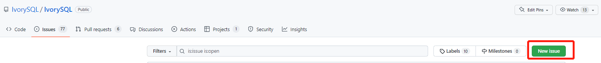

IvorySQL社区贡献指南
1. 概述
1.1. 说明
IvorySQL由一个核心开发团队维护，该团队拥有对GitHub上的IvorySQL主存储库的提交权限。同时，我们非常渴望从更广泛的IvorySQL社区中的成员那里获得贡献。如果您希望看到您的代码或文档更改被添加到IvorySQL并出现在将来的版本中，本节的内容介绍是您需要知道的。
IvorySQL社区欢迎并欣赏所有类型的贡献，期待您的加入！
1.2. 行为准则
我们欢迎所有社区成员、贡献者阅读并遵守我们的 行为准则。我们致力于为每个人创造包容、尊重的参与环境，不论其背景或身份特征如何。行为准则明确了我们对社区行为的期望，确保所有参与者都能在无骚扰的环境中合作。
1.3. 管理说明
IvorySQL 项目通过开放协作的团队运作，每个团队专注于项目的特定领域。每个团队由审查者、提交者和维护者组成，共同管理一个或多个代码仓库。团队层面的重要决策由维护者制定。
IvorySQL 开发者的典型成长路径为：用户 → 审查者 → 提交者 → 维护者。需要理解的是，承担更多角色并不意味着在社区中拥有特权。IvorySQL 社区的所有参与者都是平等的，每个人都有责任与其他贡献者建设性地合作，共同营造一个友好、包容的社区环境。
这些角色是对您为 IvorySQL 开发做出重要贡献的认可。它们为您提供了开发工作流中的更多能力以提升工作效率，同时也带来了更大的责任：
-
团队担当：作为审查者、提交者或维护者，您现在代表着项目和团队成员。您需要秉持最高标准的职业精神，维护团队和项目的声誉。
-
责任担当：提交者和维护者拥有合并拉取请求的权限，同时也需要承担管理代码或文档变更后果的责任。这包括在变更引发问题时进行回滚或修复，以及与发布经理密切合作，解决发布前测试周期中发现的任何问题。
2. 角色与职责
在参与贡献前，请确认您当前的参与身份，以便更高效地了解适合您的贡献方式：
2.1. 用户
作为用户，您在使用 IvorySQL 过程中扮演着重要角色。我们鼓励您：
3. 入门准备
3.1. 注册 GitHub 账号
无论您是要提交 Issue、参与讨论，还是贡献代码与文档，您都需要使用 GitHub 账号登录并与 IvorySQL 项目进行交互。
请参考 https://docs.github.com/en/get-started/start-your-journey 注册您的 GitHub 账号，并熟悉 Git 工具和工作流。
IvorySQL 源码托管在 GitHub：https://github.com/IvorySQL。
3.2. 签署 CLA
在提交代码或文档贡献之前，为了确保代码合法合规，个人或企业贡献者需要签署贡献者许可协议（CLA）。签署 CLA 是 IvorySQL 社区接受贡献的必要条件，以确保您的贡献被合法分发。请根据下列链接下载 CLA 进行签署并将签署后的 CLA 发送至 cla@ivorysql.org。
| 如果您通过 AtomGit 平台进行贡献，系统会自动协助您完成 CLA 签署流程，无需手动下载和发送文件。 |
未签署 CLA 的 Pull Request 将无法进入评审阶段。
4. 通用贡献流程
提交 Issue、认领 Issue 和提交 PR 是所有类型贡献（代码贡献、文档贡献、组件适配贡献）的公共流程。无论您参与哪种类型的贡献，都需要遵循这三个步骤。
4.1. 提交Issue
4.1.1. 进入New issue 页面：
1、进入 IvorySql官网：https://github.com/IvorySQL/IvorySQL
2、点击New issue

4.1.2. 选择需要填写的issue类型
1、bug report
Title: 标题## Bug Report
对bug进行描述
\### IvorySQL Version
在IvorySQL哪个版本发现的问题
\### OS Version (uname -a)
系统版本
\### Configuration options ( config.status --config )
配置参数
\### Current Behavior
当前的结果
\### Expected behavior/code
期望的结果
\### Step to reproduce
复现步骤
\### Additional context that can be helpful for identifying the problem
有助于识别问题的其它信息2、Enhancement
Title: 标题## Enhancement
对于期望强化的功能作一个描述3、Feature Request
Title: 标题## Feature Request
描述你期望实现的一个功能4.2. 认领 Issue
在开始贡献之前，您需要在目标仓库的 Issue 列表中找到或创建一个 Issue：
-
浏览仓库的 Issue 列表，搜索与您想要贡献的内容相关的 Issue
-
如果找到相关 Issue，确认其尚未被分配（Assignees 为空）
-
如果 Issue 未被分配，点击右上角 Assignees 区域的
Assign yourself，将 Issue 认领给自己 -
如果 Issue 已被他人认领，请选择其他 Issue 或与认领者协商
-
如果没有找到相关 Issue，新建一个 Issue，描述您想要贡献的内容，并分配给自己
-
等待维护者评估和确认，在获得维护者确认后再开始贡献工作
| 建议在 Issue 获得维护者确认后再开始工作，避免重复或无效工作。 |
5. 代码贡献
6. 文档贡献
IvorySQL 社区提供双语文档。英文文档保存在 EN/ 目录中，中文文档保存在 CN/ 目录中。您可以为任何一方文档做出贡献，当然您也可以为两方同时做出贡献。文档贡献遵循"fork - pull request - merge"流程。
6.1. 文档中心结构
IvorySQL 文档中心由三部分组成：
如果您只是想修改现有内容或添加新页面，只需要 fork 文档文件仓库即可。如果想深度参与文档中心建设（如修改网页 UI），则需要同时 fork 这三个仓库。
6.2. 贡献方式
您可以从以下任何一项开始，以帮助改进 IvorySQL 文档：
-
编写完善文档
-
修复拼写错误或格式（标点符号、空格、缩进、代码块等）
-
修正或更新不当或过时的说明
-
添加缺少的内容（句子、段落或新文档）
-
将文档更改从英文翻译成中文，或从中文翻译成英文
-
提交、回复和解决文档问题
-
（高级）查看其他人创建的拉取请求
6.3. 方式一：通过网站快速编辑（适合小修改）
对于简单的修改（如修复拼写错误、更新少量内容），可以直接通过网站进行：
-
在文档页面右上角点击
Edit this page按钮 -
系统会跳转到 GitHub 上对应源文件的编辑页面
-
按照 AsciiDoc 格式修改内容
-
填写修改说明后提交 PR
这种方式无需本地环境，适合快速修正小问题。
6.4. 方式二：完整 Git 工作流（适合较大改动）
对于较大的改动或添加新页面，建议使用完整的 Git 工作流：
6.4.2. 将 fork 的仓库克隆至本地
cd $working_dir # 将 $working_dir 替换为你想放置 repo 的目录
git clone git@github.com:$user/ivorysql_docs.git # 将 `$user` 替换为你的 GitHub ID6.4.4. 编辑文档
在新建的 new-branch-name 中编辑文档。IvorySQL 文档使用 AsciiDoc 格式编写，请参考 AsciiDoc 语法参考。
添加新页面时：
. 将 .adoc 文件放入正确目录（CN/ 或 EN/ 对应版本目录）
. 中英文文件应该同名
. 修改对应的 nav.adoc 文件添加导航链接
6.4.6. 将修改推送至远端
git push -u origin new-branch-name完成文档推送后，请参考 提交 PR 章节创建 Pull Request。
提交 PR 后，系统会自动在 PR 页面生成预览地址。贡献者可以点击预览链接查看修改后的文档效果，确认修改是否符合预期。维护团队会对 PR 进行评审，如有修改建议会在 PR 中留言，贡献者根据反馈进行修改。评审通过后，维护团队会 merge PR，文档贡献即完成。
7. 组件适配贡献
IvorySQL 作为一款基于 PostgreSQL 研发的 Oracle 兼容数据库，天然继承了 PostgreSQL 丰富的扩展生态。为了让更多的 PostgreSQL 生态组件能够在 IvorySQL 上稳定运行，IvorySQL 社区欢迎外部贡献者参与生态组件的适配工作。
7.1. 适配范围
以下类型的组件欢迎贡献者进行适配：
-
PostgreSQL 社区官方扩展（contrib 模块）
-
基于 PostgreSQL 扩展机制开发的第三方插件
-
以独立进程形式与数据库配合工作的周边生态工具，如连接池、代理、中间件等
7.2. 贡献流程
生态组件适配，是将 PostgreSQL 生态组件适配到 IvorySQL 的工作。主要内容包括：了解目标组件的特点、原理和使用方式，测试其在 IvorySQL 的 PG 模式和 Oracle 兼容模式下能否正常使用；最后基于上述调研与测试结果，编写一篇生态组件适配文档，提交到 IvorySQL docs 仓库。文档提交后，维护者会按照适配文档中给出的步骤对目标组件进行复现测试，确认测试结果与文档描述一致后，合并该 PR。
具体的选题、测试、文档编写等环节，请参考下面的详细步骤。
7.2.1. 选题与沟通
7.2.1.1. 确认组件未被适配
在开始适配工作之前，请先查阅 生态组件适配列表，确认目标组件是否已完成适配。如果目标组件不在列表中，则继续后面的流程；否则，请重新选择一个未适配的组件。
7.2.1.2. 认领或新建 Issue
按照 认领 Issue 章节的步骤认领或新建 Issue，并注意以下组件适配特有的要求：
-
新建 Issue 时，选择
Feature Request类型，添加extension标签 -
标题格式：
Ecosystem Integration: <组件名> -
正文用一句话说明要适配的组件及其用途
维护者会评估该组件是否适合纳入 IvorySQL 生态，并在 Issue 中与您沟通确认。
7.2.2. 适配测试
生态组件适配的目标分为两个层面：
-
PG 模式：组件必须完全可用。
-
Oracle 兼容模式：应尽可能做到完全可用；若无法完全可用，至少应保证主要功能可以正常运行。对于底层机制与 Oracle 兼容模式冲突、完全无法在该模式下运行的 PG 专用扩展（例如 pg_partman 专为管理 PostgreSQL 分区表而设计，不支持在 Oracle 兼容模式下运行），需在适配文档和 PR 描述中说明情况。
7.2.2.2. 测试 PG 模式
启动 IvorySQL 实例，使用 psql 通过 5432 端口连接数据库，进行以下验证：
-
功能测试：根据组件文档提供的功能用例，逐一验证核心功能是否正常工作；
-
回归测试：如果组件源码自带测试用例，应运行并确保其全部通过；
-
边界测试：测试边界条件和异常场景，确认组件的健壮性。
如果某个功能无法使用或测试失败，需排查原因：属于 IvorySQL 侧的问题，请向 IvorySQL 仓库提交 PR 修复；属于组件侧的问题，可向组件仓库反馈，并在适配文档中记录该限制。
7.2.2.3. 测试 Oracle 兼容模式
使用 psql 通过 1521 端口（Oracle 兼容端口）连接数据库，进行以下验证：
-
参照 PG 模式的测试方法验证组件的主要功能；
-
测试组件在 Oracle 兼容模式下的数据类型兼容性；
-
测试组件功能是否支持 Oracle 风格的匿名块、存储过程、函数等。
记录各功能在 Oracle 兼容模式下是否可用，作为适配文档中功能覆盖说明的依据。
测试时请注意以下两点：
-
使用 Oracle 语法编写测试语句。Oracle 兼容模式下的部分语法与 PG 模式不同，不能直接照搬 PG 模式的测试用例。例如：interval 类型需使用 Oracle 风格的语法，而非 PG 语法；
CREATE FUNCTION、CREATE PROCEDURE等语句需在末尾另起一行加/作为结束符。 -
区分"输出差异"与"功能异常"。部分输出与 PG 模式不一致属于正常现象，不应记为兼容性问题。例如：某些输出中的类型名会带有
pg_catalog.模式前缀。判断功能是否正常，应以执行结果的语义是否正确为准，而不要求输出文本与 PG 模式逐字一致。
记录各功能在 Oracle 兼容模式下是否可用，作为适配文档中功能覆盖说明的依据。
并非所有组件都能在 Oracle 兼容模式下工作。如果执行 CREATE EXTENSION 或调用组件功能时因语法错误而失败，多是组件内部使用了 Oracle 不支持的 PG 专用语法所致，请参考下一节的 PG 语法白名单机制进行修复；如果组件与 Oracle 兼容模式在底层机制上冲突（如 pg_partman），则需要在适配文档和 PR 描述中明确说明。
|
7.2.2.4. 通过 PG 语法白名单修复兼容问题
Oracle 兼容模式测试不通过——尤其是执行 CREATE EXTENSION 就直接失败——的一个常见原因是：扩展通过 SQL 脚本实现，脚本中大量使用了 Oracle 不支持的 PG 专用语法（如 PG 风格的 interval 表达式、数组切片等），导致脚本无法通过 Oracle 兼容模式下的语法解析。
针对这种情况，IvorySQL 内核提供了 PG 语法白名单机制（见 src/backend/commands/extension.c 中的 PgDialectExtensions 列表）。扩展加入白名单后，在 Oracle 兼容模式集群中执行 CREATE EXTENSION 时：
-
扩展的安装脚本会临时改用 PG 解析器解析执行，不受当前会话兼容模式的影响；
-
安装脚本所创建的函数会被自动注入
SET ivorysql.compatible_mode = pg配置，此后无论从哪种兼容模式的会话调用，函数体都由 PG 解析器解析执行。
借助该机制，使用 PG 专用语法实现的扩展无需修改任何代码，即可在 Oracle 兼容模式集群中正常安装和运行。目前白名单中已包含 pg_profile、pg_repack 等扩展。
该方式适用于：
-
扩展主要通过 SQL 或 PL/pgSQL 实现，因使用 PG 专用语法导致
CREATE EXTENSION或函数调用在 Oracle 兼容模式下失败； -
扩展功能自成一体（如统计信息采集、表重组等管理类扩展），用户只需调用其入口函数，不要求其内部实现与 Oracle 风格对象交互。
该方式不适用于：
-
扩展需要与用户创建的 Oracle 风格对象（存储过程、Oracle 专有数据类型等）深度交互，强制按 PG 语法解析会破坏这种交互；
-
扩展与 Oracle 兼容模式在底层机制上冲突（如 pg_partman 依赖 PostgreSQL 原生的分区表管理），此类问题不在语法解析层面，白名单无法解决，仍需在适配文档和 PR 描述中说明限制。
确认目标扩展属于适用场景后，您可以向 IvorySQL 仓库提交 PR，将扩展名加入 PgDialectExtensions 白名单，并在 PR 描述中附上两种模式下的测试结果；同时在适配文档的 "Oracle 兼容性" 章节中说明该扩展通过白名单机制运行。
7.2.3. 文档编写
IvorySQL 文档使用 AsciiDoc 编写的，其语法与 Markdown 类似但功能更加强大。如果不熟悉 AsciiDoc 语法，可参阅 asciidoc语法快速参考。
7.2.3.1. 文档结构
每篇生态组件适配文档应包含以下章节（可根据组件特点适当调整）：
| 章节 | 说明 |
|---|---|
概述 |
介绍组件的功能、适用场景，以及与 IvorySQL 的关系 |
原理介绍 |
（可选）介绍组件的核心工作原理，帮助读者理解组件的运作机制 |
安装 |
详细的安装步骤，包括依赖安装、源码获取、编译安装、扩展创建等 |
配置 |
如果组件需要额外的配置步骤（如修改 |
使用 |
核心功能的使用示例，包括创建对象、执行操作、查询结果等 |
Oracle 兼容性 |
组件在 Oracle 兼容模式下的表现，包括支持的功能和已知限制 |
7.2.3.2. 文档模板
以下是一个生态组件适配文档的基础模板，贡献者可以在此基础上填充内容：
:sectnums:
:sectnumlevels: 5
= <组件名称>
== 概述
<组件功能介绍、适用场景、与 IvorySQL 的关系>
项目地址：<https://github.com/xxx/xxx>
版本：<适配的组件版本号>
开源协议：<组件的开源协议>
== 安装
[TIP]
源码测试安装环境为 <操作系统版本>，环境中已安装 IvorySQL 5 及以上版本，安装路径为 /usr/local/ivorysql/ivorysql-5
=== 依赖
<列出并说明安装所需的依赖>
=== 源码安装
[literal]
----
# 获取源码
git clone <仓库地址>
cd <目录>
# 设置 pg_config 路径
export PG_CONFIG=/usr/local/ivorysql/ivorysql-5/bin/pg_config
# 编译安装
make
sudo make install
----
=== 创建扩展
[literal]
----
ivorysql=# CREATE EXTENSION <扩展名>;
CREATE EXTENSION
ivorysql=# SELECT * FROM pg_available_extensions WHERE name = '<扩展名>';
----
== 使用
=== <功能点一>
<使用示例及输出>
=== <功能点二>
<使用示例及输出>
== Oracle 兼容性
<可选：在 Oracle 兼容模式下的测试结果>7.2.3.3. 同步更新概述页
完成组件文档编写后，请务必同步更新 ecosystem_overview.adoc 中的插件列表表格，在表格末尾追加一行新记录，包含以下信息：
-
序号：当前最大序号加 1
-
插件名称：带 xref 链接的插件名称
-
版本：您适配的组件版本
-
功能描述：一句话概括组件功能
-
适用场景：列举主要适用场景
| 中英文版本的概述页都需要同步更新。 |
7.2.4. 提交 PR
7.2.4.1. 创建分支
生态组件适配文档统一提交到 IvorySQL docs 仓库（注意：不是创建 Issue 的 IvorySQL 主仓库）。请先 fork 该仓库并 clone 到本地，然后创建特性分支：
git checkout -b feature/adapt-<组件名称>
7.2.4.2. 添加文件
-
将文档文件放入
CN/modules/ROOT/pages/master/ecosystem_components/目录 -
如有图片资源，放入
CN/modules/ROOT/images/目录 -
同步准备英文版本，放入对应的 EN 目录
-
更新 CN 和 EN 的
nav.adoc和ecosystem_overview.adoc里的链接
7.2.4.3. 创建 PR
按照 提交 PR 章节的步骤创建 PR，并注意以下特殊要求：
-
向 IvorySQL docs 仓库的 master 分支提交 PR
-
在 PR 描述中使用
Fixes IvorySQL/IvorySQL#<编号>关联中认领或新建的适配 Issue -
在 PR 描述中说明：
-
适配的组件名称和版本
-
测试环境信息
-
已完成的测试项目
-
已知的限制或问题
-
|
7.3. 常见问题
7.3.1. 编译报错找不到 pg_config
请确认 PG_CONFIG 环境变量设置正确，指向 IvorySQL 安装目录下的 bin/pg_config。可以通过以下命令确认：
$PG_CONFIG --version
7.3.2. 扩展创建失败
请检查：
-
扩展的
.so文件是否正确安装到 IvorySQL 的lib目录 -
扩展的
.sql和.control文件是否正确安装到share/extension目录 -
IvorySQL 版本是否与组件要求的 PostgreSQL 版本兼容
-
若失败原因是 PG 专用语法无法解析，可参考的 PG 语法白名单机制。
7.3.3. Oracle 兼容模式下功能异常
部分 PostgreSQL 扩展依赖 PG 原生解析器，在 Oracle 兼容模式下可能无法正常工作。遇到此类问题时，请在文档的 "Oracle 兼容性" 章节中明确说明限制，并提供替代方案（如有）。
7.3.4. 不确定组件是否适合适配
请先在 Issues 中发起讨论，描述组件的功能和您的适配计划，维护者会给出评估意见。